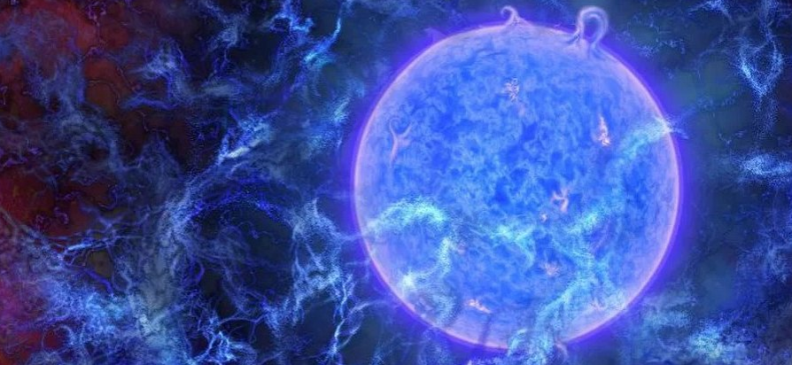
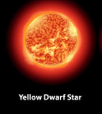
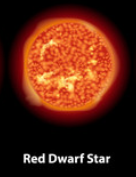
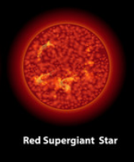
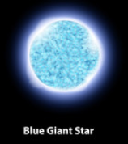
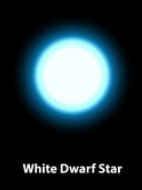
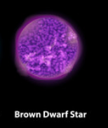

STARS

What are STARS ?
A star is a luminous ball of gas, mostly hydrogen and helium, held together by its own gravity. Nuclear fusion reactions
its core support the star against gravity and produce photons and heat, as well as small amounts of heavier elements. The Sun is the closest star to Earth.
How are STARS Formed?
Stars form from an accumulation of gas and dust, which collapses due to gravity and starts to form stars. The process of star formation takes around a million years from the time the initial gas cloud starts to collapse until the star is created and shines like the Sun.
Role Of STARS In The Universe
Why are stars important? All other naturally occurring elements were formed during the life and death of stars. At the end of a star's life, much of its matter is blown into space, where it provides the gas and dust for building new stars, planets, and everything on them including our bodies.
Types Of STARS

1. Yellow Dwarf STARS : This is the term used to describe a medium-sized star. These stars are also known as “G dwarf stars” and “G-type main-sequence stars.” One notable characteristic of these stars is their size. Yellow dwarf stars are between 0.84 and 1.15 times the mass of our sun.

2. Red drawf STARS : A red dwarf is the smallest and coolest kind of star on the main sequence. Red dwarfs are by far the most common type of star in the Milky Way, at least in the neighborhood of the Sun, but because of their low luminosity, individual red dwarfs cannot be easily observed.

3. red Supergiant STAR : 3. Red Supergiant STAR : Red supergiants are stars with a supergiant luminosity class of spectral type K or M. They are the largest stars in the universe in terms of volume, although they are not the most massive or luminous.

4. Blue Giant STARS : In astronomy, a blue giant is a hot star with a luminosity class of III (giant) or II (bright giant). In the standard Hertzsprung–Russell diagram, these stars lie above and to the right of the main sequence.

5. White Drawf STARS : A white dwarf, also called a degenerate dwarf, is a stellar core remnant composed mostly of electron-degenerate matter. A white dwarf is very dense: its mass is comparable to that of the Sun, while its volume is comparable to that of Earth. Wikipedia

6. Brown Drawf STARS : Brown dwarfs are objects which have a size between that of a giant planet like Jupiter and that of a small star Given that range of masses, the object would not have been able to sustain the fusion of hydrogen like a regular star thus, many scientists have dubbed brown dwarfs as "failed stars".
7. Red Giant STARS : A red giant is a luminous giant star of low or intermediate mass in a late phase of stellar evolution. The outer atmosphere is inflated and tenuous, making the radius large and the surface temperature around 5,000 K or lower.
(All data is taken from Google or Wikipedia)